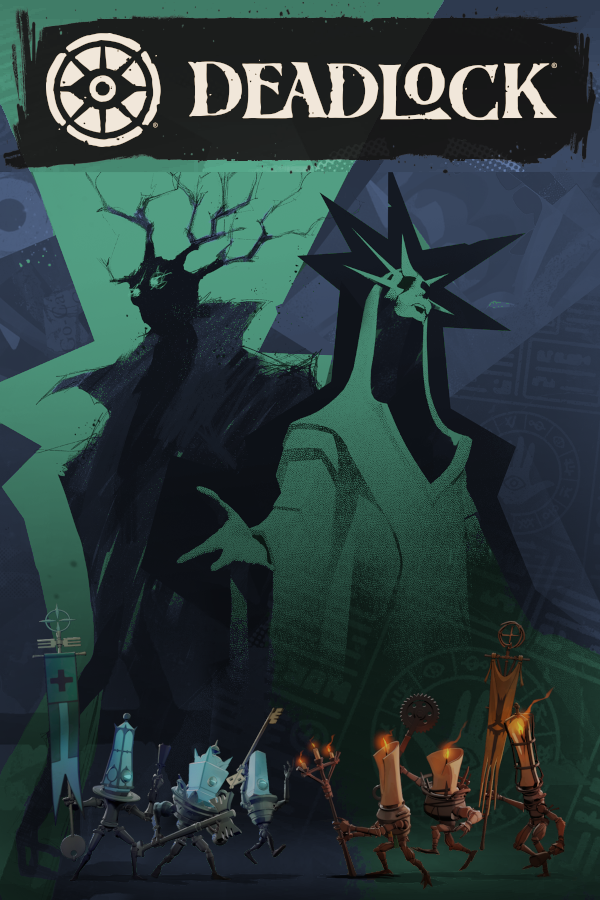
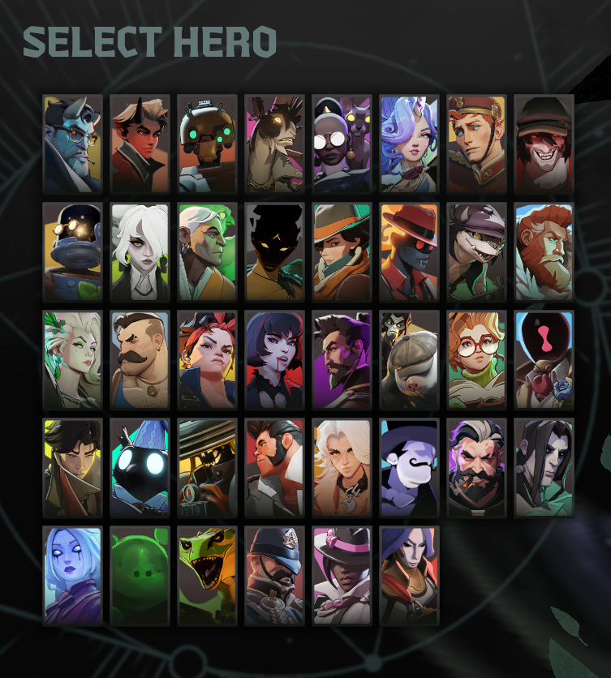
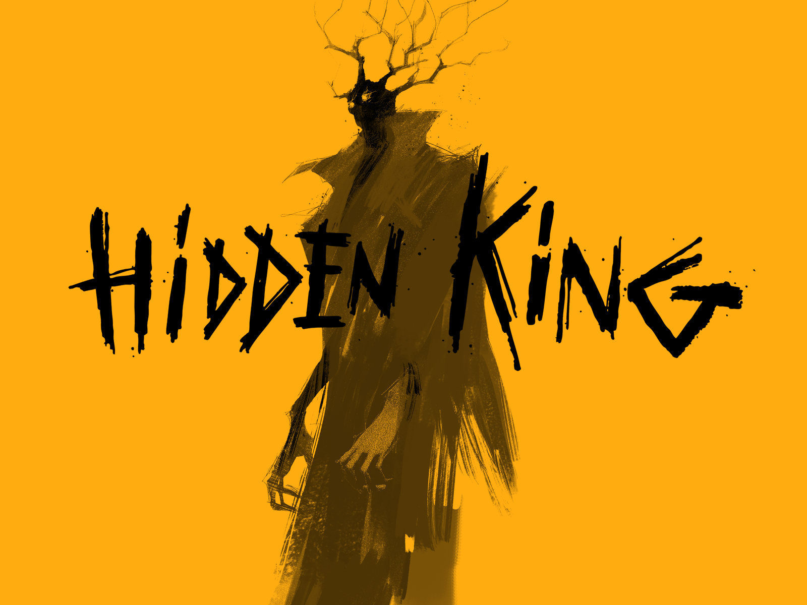
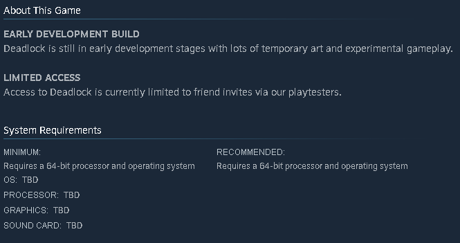

Overview
Deadlock is an upcoming MOBA hero shooter game developed by Valve. Currently in early access and requires a invite to play. Despite this, the game is already quite polished and has a lot of potential and recieves updates quite regularly.
Deadlock is an upcoming MOBA hero shooter game developed by Valve. Currently in early access and requires a invite to play. Despite this, the game is already quite polished and has a lot of potential and recieves updates quite regularly.
The gameplay follows the MOBA formula of 6v6 team battles, with a focus on lane control and team coordination. The game currently has 38 characters (and counting), called heroes, each with their own unique abilities and design, no two characters are the the same and you can tell Valve put a lot of effort into making each character feel unique. The standard gameplay loop is have 3 2v2 lanes where both teams push for control of lanes and "farm" money by killing minions, troopers, and jungle camps, denizens. As you accrue money, you can buy items and increase the strengh of your abilities. The goal of the game is to destroy the enemy's base, i.e. their respective patron.
Despite this game being in early access, you can tell Valve put a lot of work into developing a game with its own unique story and world. Each character has their own backstory and impact on the world. A brief rundown of the world of Deadlock is that when an enclipse triggered an event known as teh Maelstrom near the end of the 19th century, the world had to accept that the supernatural truly existed. The game takes places 50 years later where the two patrons, the Hidden King and the Archmother, fight to enter this plane of existence, promising to fulfill the wish of anyone who helps them complete the ritual. The ritual takes place in the Cursed Apple, the game's version of Midtown in New York City. Most games don't do this, or at least don't do it well, but Deadlock has unique voice interactions between each and every character, truly bringing to life the personalities of these characters. I have included a video of the Doorman's interactions with other characters.
Overall, this game looks and sounds great, and it is going to get even better in the future. The game recieved a major update in January 2026 that overhauled a lot of the game's visuals and audio. It introduced 6 new heroes, the new stylized patrons, and unique troopers for each side. It brought a whole new level of detail to the game's visuals and leaves you wondering what else they will add to make the game even better. On the audio side, even before this update, the game had a great soundtrack that falls inline with the environment and world Valve is trying to create. As I said before with the characters, they all look unique and sound true to their personalities. Here is a sample of the Hidden King's OST when you load into the match.
Deadlock OST - For the King
Because this game is in early access, there isn't a system requirements section on the store page on Steam like most games. I can't give an exact required/recommended specs to have, but I can give a general idea of what can be done to have a smother experience. I don't have a crazy rig to play the game, but it also isn't considered something to be low-end either. I believe that having the standard 32 gb of ram, a GPU that was released no later than 8-10 years ago, and a CPU that is atleast Ryzen 5 for AMD or i5 for Intel should be enough to play the game at 1080p and 60fps. You can always tinker with the settings and members of the community have gone more in-depth by accessing the game files to further optimize the game for performance. Regarding bugs, these things will always be prevalent in games, especially in early access, but I believe the developers at Valve put a lot of effort into making the game a stable and enjoyable experience.They update the game regularly and if there is anything outrageous and game-breaking, they will usually patch it out in a timely manner.
Overall, Deadlock is a great game and worth checking out, especially if you can get someone to get you an invite (you can most likely join the discord and have someone get you an invite, each person can send two invites). In all honestly, this game feels so unique and polished compared to games that are past the beta and already released that it really makes me excited for the future of the game and what it will be like when it is fully released. In the end, I give Deadlock a 9/10, which is something to truly be proud of since this game is still in early access with many changes to come. I have the attached the OST of the main menu theme.



